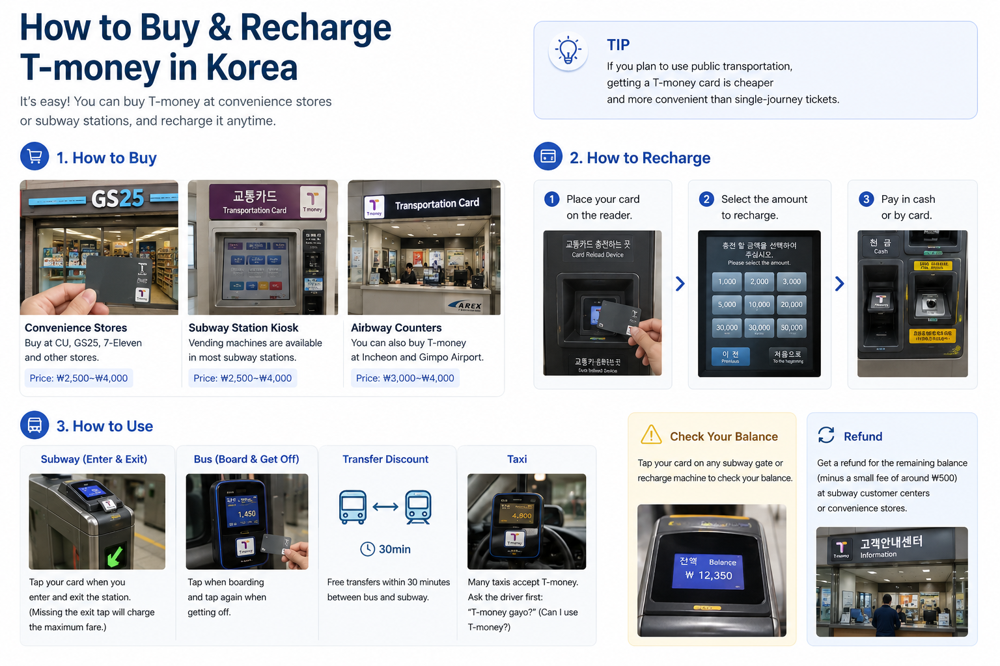
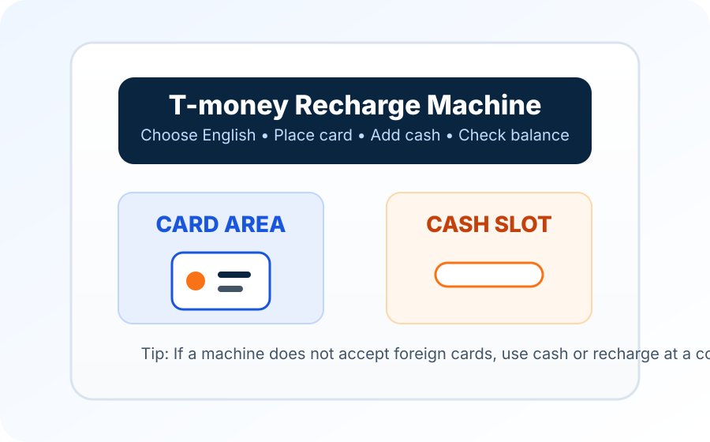

Most visitors do not need to understand Korea's entire transit-payment system. They need one thing that works when the airport journey ends and ordinary city travel begins. A physical T-money card still does that well: add Korean won, tap at the gate or bus reader, and keep using the same card across much of Korea's public transport network.
Since July 2025, T-money can also live in Apple Wallet on supported iPhone and Apple Watch models. Direct Wallet top-up still requires a South Korea-issued credit or debit card, but international users now have a separate MobileTmoney route that can top up through Apple Pay with supported foreign card networks. A physical card remains the simplest fallback when your phone or card network does not fit those mobile routes.
Physical Card, iPhone or Android?
The right version of T-money depends less on which technology looks easier and more on how you can put money onto it.
Physical T-money
Apple Wallet T-money
KOREA TOUR CARD Tmoney app
Best fit
Most visitors, especially travelers who only have overseas payment cards
iPhone or Apple Watch users; direct Wallet funding is simplest with a supported South Korea-issued card, while international users may use MobileTmoney when their Apple Pay card network is supported
Travelers with a compatible NFC Android phone who want a mobile option
How you get it
Buy a card after arrival
Add a prepaid T-money card in Apple Wallet
Issue and manage T-money through the KOREA TOUR CARD Tmoney app
How you add money
Cash at subway recharge machines or participating convenience stores is the safest default
Direct Apple Wallet funding requires a South Korea-issued credit or debit card; MobileTmoney currently offers international users Apple Pay top-up with Mastercard, American Express, UnionPay and JCB
The official app currently advertises top-up and refund with supported international cards
Main catch
You have to carry the card and may still need cash for recharging
Direct Wallet top-up requires a South Korea-issued card; MobileTmoney supports only the foreign card networks it currently lists, and Visa is not listed
Phone and NFC compatibility matter, so check the app before depending on it
For a short trip, there is nothing old-fashioned about choosing the physical card. It is often the version that asks the fewest questions of a foreign visitor.
Get Mobile Data Ready for Korea
T-money pays your subway and bus fares. A travel eSIM can provide mobile data for maps, directions and messages, but it does not replace T-money or add money to your transit balance. Check your phone’s eSIM compatibility and the plan terms before buying.
Affiliate link: Korea Inside may earn a commission at no extra cost to you.
Buying a Physical T-money Card
Current VisitKorea guidance lists T-money cards at convenience stores such as GS25, CU and 7-ELEVEN nationwide, as well as information centers at Seoul subway stations on Lines 1 through 8. General card prices are currently listed at about ₩3,000 to ₩5,000, although the price can vary with the card design and seller.
For most visitors, there is little reason to turn this into a pre-trip purchase. Buying after arrival is normally straightforward. Look for the T-money logo at a convenience store or station rather than searching for a special tourist version of the card.
The card price and the money stored on the card are separate. If you buy the card and walk straight to a subway gate without adding value, the card itself does not give you a ride.
Can my family share one T-money card?
For subway gates, plan on one transit card for each fare-paying traveler. One card cannot simply be tapped repeatedly to send the whole family through separate subway gates. Give each child who needs a paid fare their own card with the correct age category registered.
Some Seoul buses allow a driver to charge several people to one card if you tell the driver the passenger count before tapping. That is a specific bus payment procedure, not a substitute for separate cards on a trip that includes the subway. Multi-passenger transfer rules are more restrictive, especially when the group later takes a train. For most families moving around Seoul, one card per fare-paying person avoids confusion.
Can I use a T-money card from an earlier Korea trip?
Try checking the balance before buying another card. A standard working T-money card may still be usable on a return visit, but do not assume an old or promotional card will be recognized everywhere. If a machine cannot read it, ask at a staffed subway station or a participating T-money counter before loading more money.
What if I arrive at Incheon Airport late?
Look for a convenience store selling T-money in your arrival terminal or the airport railroad station area. Confirm that the store has an actual transit card in stock and can load it; being open late does not guarantee every card design or service is available. If buying a card is inconvenient, a separate AREX Express ticket or another confirmed airport transfer can get you to Seoul, where you can buy T-money for the following days.
How Much Should You Load?
There is rarely a good reason to load a large amount on day one.
For a short Seoul trip, Korea Inside would usually start with around ₩20,000 to ₩30,000 and add more later. That is planning advice, not an official T-money rule. Your actual spending depends on how often you ride, how far you travel and whether you also use the balance at participating merchants.
Starting smaller also makes the end of the trip easier. A card with a few thousand won left is much less annoying than one with a large balance you suddenly have to refund before the airport.
Recharging a Physical Card
For an ordinary physical T-money card, cash is still the safest assumption for a foreign visitor. Subway recharge machines are straightforward once you know where the cash slot is, and participating convenience stores can also add value to the card.
Do not confuse this with Seoul's newer international-card ticket machines. In 2026, Seoul expanded overseas credit and debit card payments at new subway kiosks for products such as Climate Card short-term passes and single-journey tickets. That does not mean every ordinary T-money recharge machine now accepts an overseas card.
If a machine rejects your card, that is not a reason to keep trying the same payment method. Use Korean won or take the T-money card to a participating convenience store.
The balance shown at a subway gate or recharge machine is useful enough for most visitors. Add money when the balance starts getting low rather than trying to calculate the entire trip in advance.
Why does a subway machine accept my foreign card for one ticket but not T-money top-up?
The product on the screen matters. Since March 2026, newer Seoul subway vending machines have supported internationally issued cards for certain products, including single-journey tickets and Climate Card short-term passes. This is not the same as universal overseas-card recharging of an ordinary physical prepaid T-money card. Seoul's September 2026 kiosk guidance still separates those card-payment products from general prepaid-card top-ups.
If you need to charge a normal plastic T-money card today, carry some Korean won and choose the physical-card recharge function, or ask a participating convenience store to add cash value. An international Visa or Mastercard that bought a single-journey ticket is not proof that the same machine will recharge your T-money card. Buying a card, buying a ticket, and adding a transit balance are three different transactions.
I paid for a top-up, but the card balance has not changed. What should I do?
Before paying again, use the station machine, a participating counter, or a reliable balance check to see the amount actually stored on the card.
Keep the receipt or payment record and note the shop, machine, time, amount, and the card you presented. When loading two cards, check each one separately.
If you are still at the store, ask the cashier to verify that the recharge completed on the correct card. At a station, ask a staff member to check the card and the machine.
If the payment and stored balance do not agree, contact the payment outlet or T-money support with your evidence. Do not assume fraud or make repeated payments before the first transaction has been checked.
This is different from being charged a fare after a completed journey: a reduced balance after travel can be a legitimate fare or distance adjustment. First identify whether the missing money is a top-up or a travel charge.
Can I simply tap my overseas bank card on a Seoul bus or subway gate?
Do not depend on it as the standard method in October 2026. T-money announced plans for direct foreign-card transit acceptance with a phased rollout beginning in 2027. That future system is separate from paying with an overseas card at selected ticket machines today. For a current trip, use a confirmed transit card, mobile T-money setup, or a ticket accepted by the specific service.


Using T-money on the Subway and Bus
The subway routine is simple after the first ride: tap once when you enter and tap again when you leave. The exit tap closes that journey and lets the system calculate the fare.
Buses need the same habit. Tap when you board and tap again before getting off.
That second bus tap is easy to forget because the door is already open and everyone is moving. It matters because transfer discounts depend on the transport system knowing where one ride ended and the next one began.
When you transfer correctly between eligible buses and subways, T-money can apply the relevant transfer discount automatically. The detailed transfer window varies by system and time, so this guide does not need to turn a simple habit into a timetable: tap properly every time.
Why did I pay again when I transferred?
In Seoul's integrated bus-and-subway fare system, the usual transfer window is within 30 minutes after the previous exit tap, extended to 60 minutes between 9 PM and 7 AM. Up to four transfers can be recognized across five consecutive rides. A return trip on the same bus or route does not count as a discounted transfer, and the rule is not an unlimited free-ride ticket.
Check four things before deciding the system made a mistake: Did you tap out? Was the next ride within the allowed time? Was it the same route? Did you use the same card for the whole journey? The discount also depends on eligible operators and routes; travel outside Seoul may follow different rules.
A transfer that shows another charge has not necessarily failed. The system can collect a difference between fares or add distance-based charges. Look at the full journey, not only the number displayed on one reader. If a charge looks wrong, record the bus number, stations, tap time and card details, and ask the transport operator or station staff how it was calculated.
I forgot to tap off the bus. Can I fix it on the next ride?
Do not count on a second bus or subway reader to repair an unfinished first trip. The missing exit record can affect subsequent fares and transfer eligibility. When you notice the problem, check your balance and explain the previous route to staff if a later fare looks unusual. On the next bus journey, make the exit tap part of getting ready to leave, not an afterthought once you are already outside.
Do all the people in my group get the same transfer discount?
Not automatically. Seoul's multi-passenger bus transfer exception has matching boarding, exit and passenger-count conditions and does not carry into subway transfers. A single card charged for several bus riders is therefore a poor default for a group mixing buses with trains. Separate cards make each person's fare and transfer record easier to follow.
Where T-money Works Beyond the Subway
Subways and city buses are the reason most travelers buy T-money, but the network is wider than Seoul.
T-money's current official usage guide lists subway and bus coverage across many regions of Korea, including the major metropolitan systems. It also lists taxi acceptance across a large number of cities and counties.
Taxi payment is not completely uniform. T-money itself warns that restrictions can apply in some areas, so seeing a card reader or the T-money mark is more useful than assuming every taxi will accept the balance.
T-money can also be used at participating retail and other partner locations that display the relevant T-money acceptance mark. That is useful for an occasional convenience-store purchase, but it is better to think of T-money as a transport card with some extra payment uses rather than as a replacement for a normal debit or credit card.
Some express buses, intercity transport, rail counters and toll-road situations also support particular T-money products or card types, but the rules are more specific. For ordinary travel planning, buses and subways are the dependable core.
Does T-money work on both Incheon Airport trains?
AREX All-Stop Train: yes, with a working T-money transit card. It uses ordinary transit gates and stops at intermediate stations such as Hongik University and Gongdeok. It can be a natural first journey if you have loaded a physical card or a supported mobile transit card.
AREX Express Train: buy a separate Express ticket. The non-stop airport service has its own ticketing and boarding process. Do not head to the Express entrance expecting your ordinary T-money balance to act as a reserved Express ticket. Check the train type before buying or tapping.
T-money's wide national reach also does not turn it into a universal long-distance rail ticket. Reserved train services, intercity or express bus ticketing and certain special airport services may require a separate ticket or a different payment procedure. Follow the operator's ticket instructions when the trip is not a regular subway or local bus ride.
Where Should You Stay for Easier Airport Access?
Your hotel location can make a bigger difference than the train itself. If you are still choosing where to stay, compare Hongdae, Gongdeok, Seoul Station and Myeongdong before deciding on your airport route.
Apple currently lists support for iPhone Xs and Xr or later with iOS 17.2 or later, and Apple Watch Series 6 or Apple Watch SE 2nd generation or later with watchOS 10.2 or later. Only prepaid T-money is supported in Apple Wallet.
With Express Mode enabled, you can tap the device at a transit reader without opening Wallet for every ride. The balance is also visible in Wallet.
The part that matters most to an overseas visitor is funding. Apple's current support guidance says a South Korea-issued credit or debit card is required to purchase or top up a T-money card from Apple Wallet.
International users now have a separate route through MobileTmoney. The current App Store listing says the app is available without sign-up for basic use and supports Apple Pay top-up with Mastercard, American Express, UnionPay and JCB. Visa is not currently listed for this international-user top-up route.
So an iPhone is not, by itself, a reason to skip the physical card. If your Apple Pay card network is not supported by MobileTmoney, keep a physical T-money card or another confirmed funding route as backup.
One T-money card can be used on one Apple device at a time. If you want separate transit cards on an iPhone and an Apple Watch, Apple says each device needs its own card.
I have an iPhone and a foreign bank card. Which top-up route should I try?
First confirm that your iPhone or Apple Watch and operating system support T-money. Adding a transit card to Wallet and paying to load it are separate steps.
If you have a supported South Korea-issued payment card, Apple's direct Wallet funding route may be available. Do not assume an overseas-issued bank card will work in that direct Wallet flow.
Without a Korean payment card, check the official MobileTmoney app's traveler/foreigner route. Its current App Store listing advertises no-sign-up basic use and Apple Pay top-up with Mastercard, American Express, UnionPay and JCB. It does not list Visa for that route.
Before depending on your phone as your only fare payment, confirm that a card was issued, money was actually added and the transit card is ready for the reader. Keep a small physical-card or other confirmed transport-payment fallback if your card network or setup fails.
App screens, supported payment networks and card-issuer decisions can change. If you cannot find the international-user option, check the latest official app listing rather than following an old screenshot. If a mobile card contains money but will not work, contact T-money support before deleting or reissuing the card; doing so without checking recovery rules can complicate balance recovery.
Android Travelers Have a Different Mobile Route
T-money also operates the KOREA TOUR CARD Tmoney app for compatible Android phones.
The current official Google Play listing says the app can use NFC as T-money, show the balance and transaction history, and handle top-up or refund using supported international cards including Mastercard, Visa, American Express, JCB and UnionPay.
Seoul has also pointed to the KOREA TOUR CARD app as an overseas-card recharge route for Android travelers.
The word compatible matters. NFC hardware, phone configuration and app support can vary, so install and check the app before treating your phone as the only transport card you will carry in Korea.
What should I test before leaving the hotel with only Android T-money?
Check that NFC is turned on and that your device can actually issue and use a transit card in the official KOREA TOUR CARD Tmoney app. A phone having NFC hardware does not by itself confirm that the app will work on that model. Confirm a successful balance load, know where to view the balance and keep a separate transit-payment option for the first journey.
The app listing advertises support for selected international card networks, including Visa, but an individual payment can still be declined. If payment fails, check the app and card requirements before repeatedly trying; a physical cash-loaded card is often the faster solution when you need to board now.
Children and Teenagers
A child or teenager should not simply use an adult T-money card and expect the discounted fare to appear automatically.
Current VisitKorea guidance says travelers under 18 need to register their date of birth to receive the relevant public-transport discount. A convenience store that handles T-money is the practical place to ask about the registration when buying the card.
If you are traveling as a family, do this near the beginning of the trip rather than discovering after several rides that the card has been charging the adult fare.
My child's card is charging the adult fare. What should I check?
First confirm whether the card has the child's correct date of birth registered for the applicable age-based fare. VisitKorea instructs travelers under 18 who qualify for a youth or child fare to register the birth date, and a participating convenience store is a practical place to ask for that service. Merely buying a smaller or child-themed card does not guarantee the right fare category has been activated.
Check the fare category before several days of travel, especially if your family has multiple cards that look alike. Eligibility and free-travel exceptions for very young children depend on the operator and circumstances, so confirm the current rule for the route instead of guessing from the card's design.
When the Balance Is Too Low
Running short of balance is usually an inconvenience, not a disaster.
Recharge machines and many subway gates show the remaining amount. Seoul's official subway guidance also notes that fare-adjustment machines near ticket gates can be used when a T-money balance is insufficient.
If you notice the balance is getting low before a longer journey, topping up outside the gate is easier than dealing with it while people are waiting behind you.
The gate will not let me out. Should I keep tapping?
No. If the problem is insufficient stored value, look for a fare-adjustment or recharge machine near the gates, or ask station staff where to settle the shortfall. Keep the card available so the unfinished trip can be checked. If the reader does not recognize the card at all, that is a different problem from a low balance; staff may need to check the card or the gate.
For a longer airport or cross-city journey, check the balance before entering rather than assuming the amount left over from a short city ride will be enough. Avoid adding a large final balance simply to eliminate the risk of one low-fare message.
Refunds Before You Leave Korea
T-money balance refunds are possible, but this is one part of the system where old travel pages can be misleading.
As of this August 2026 review, VisitKorea says T-money balances over ₩50,000 must be refunded at Tmoney Town near Seoul Station, while smaller balances can be handled at convenience stores. Some older official Seoul tourism pages still show a lower convenience-store threshold.
For that reason, Korea Inside does not recommend planning a large final refund around an old number from a blog or screenshot. Check the current T-money or VisitKorea guidance if a substantial balance remains.
The easier strategy is to stop adding large amounts near the end of the trip. Keep enough for your remaining buses, subways and airport journey, then spend the balance down naturally.
A balance refund and the original price paid for the physical card are not the same thing. Do not assume returning the card means recovering every won you originally spent.
Can I get the whole amount back at any convenience store?
No. An outlet that can sell or reload T-money may not handle every size or type of refund. VisitKorea's August 2026 guidance routes physical-card balances above ₩50,000 to Tmoney Town near Seoul Station. For smaller amounts, ask the specific store or station whether it can process your balance; store-level limits and fees can vary. The original card purchase price is not the same as the refundable stored fare value.
Should I refund my mobile card or keep an older physical card?
Physical-card refunds and mobile-app refunds are not automatically the same procedure. If you used a phone, check the app's supported refund process and destination before removing the transit card. If your physical card still works and you expect to return to Korea, checking the balance on your next trip may be easier than planning a special last-day refund stop. Neither option should be assumed available for every card product.
The Problems Travelers Usually Run Into
“I bought the card, but the subway gate says there is no balance.”
Buying the physical card and loading travel money are separate steps. Take it to a recharge machine or participating convenience store and add Korean won before trying the gate again.
“The recharge machine will not take my overseas card.”
For a normal physical T-money card, cash remains the safest default. Seoul's newer international-card kiosks should not be treated as proof that every ordinary T-money machine accepts a foreign card.
“I forgot to tap when I got off the bus.”
The exit tap matters for transfers. Make the second tap part of the routine even when you are not immediately changing to another bus or subway.
“My T-money worked on the subway but not in a taxi.”
Taxi acceptance is broad but not universal. T-money's own usage guide notes that regional restrictions can apply. Use another payment method if the vehicle cannot process the card.
“I have an iPhone, so I thought I would not need a physical card.”
Apple Wallet now supports T-money, but direct Wallet funding still requires a South Korea-issued credit or debit card. International users may instead use MobileTmoney with a currently supported Apple Pay card network; Visa is not currently listed.
“I loaded much more than I need.”
You can look into a balance refund, but refund locations and amount limits are more complicated than using the card. Toward the end of the trip, smaller top-ups are usually easier.
“I am not sure whether a shop accepts T-money.”
Look for the T-money acceptance mark or ask before paying. Retail use is a useful extra, but it is not the reason to depend on T-money as your only payment method.
“Can my family use the same card at subway gates?”
Not as the normal gate routine. Each fare-paying person needs a separate card for subway travel. Some buses can charge a group after the driver selects the passenger count, but that exception is not reliable for bus-to-subway transfers. See the buying section for a family-card decision.
“I paid the cashier, but the card still shows the old balance.”
Check the stored value independently, keep the receipt or payment record, and ask the store or station to trace the charge. If two cards were being loaded, verify them individually. Do not assume dishonesty or pay again until the first transaction has been checked.
“My transfer charged me again. Did the discount fail?”
Check your last exit tap, the transfer time, the route and whether distance or a higher base fare explains the charge. In Seoul, the normal window is 30 minutes (60 minutes from 9 PM to 7 AM); a return to the same bus route is excluded. A nonzero fare on the next reader does not prove an error.
“My T-money card will not open the AREX Express gate.”
AREX All-Stop and AREX Express have different ticketing. Your ordinary transit-card balance is for the All-Stop service; the non-stop Express requires its own ticket. Confirm which train you selected before trying another gate.
“The reader will not recognize my card at all.”
First check that the card is a supported transit product and is being held to the correct reader. If it is not recognized at a recharge machine either, ask a station attendant or participating counter to check it. This differs from a recognized card with an insufficient balance.
“I added T-money to my iPhone, but my foreign Visa will not top it up.”
Apple Wallet card issuance does not guarantee foreign-card funding. Apple's direct Wallet loading has a Korean-issued-card requirement. The MobileTmoney international top-up route lists Mastercard, American Express, UnionPay and JCB, not Visa. Check the official app's current support before relying on phone-only travel.
T-money or WOWPASS?
If transportation is the main problem you are trying to solve, T-money is still the simpler product.
WOWPASS becomes more relevant when you also want a Korean prepaid payment balance, foreign-currency funding and card-management features. Its T-money transport function is built into the same physical card, but the WOWPASS payment balance and T-money balance remain separate.
What about a Climate Card short-term pass instead of T-money?
A Seoul Climate Card short-term pass is a different product from ordinary pay-as-you-go T-money. It can make sense if you expect frequent rides on services within its covered area on consecutive days. It becomes less attractive when you mostly walk, take taxis, spend days outside Seoul, or need routes the pass excludes.
As of October 2026, Seoul's tourist short-term options are 1, 2, 3, 5 and 7 days. VisitKorea lists the pass prices at ₩5,000, ₩8,000, ₩10,000, ₩15,000 and ₩20,000 respectively, plus the separately purchased physical card when needed. Check the start-of-validity rules and the exact subway or bus route: a Seoul-area unlimited pass is not a nationwide T-money balance, and it is not automatically an AREX Express ticket.
Seoul introduced a separate resident-oriented Climate Pass scheme in September 2026, while tourist short-term Climate Card products continued. Do not mistake older advice about the former 30-day prepaid product for the current tourist pass. For foreign cards, Seoul's newer subway machines support the short-term Climate Card purchase/top-up product; this does not imply that every normal plastic T-money card can be recharged with the same bank card.
Practical choice: Use ordinary T-money if you want one simple card for mixed Seoul and other-city travel, are unsure of your daily riding volume, or have a flexible itinerary. Compare the actual days, covered routes, separate physical-card price and anticipated fares before choosing a Climate Card short-term pass. WOWPASS is a separate decision when you also want a prepaid shopping balance.
T-money FAQ
What is T-money?
T-money is a prepaid transportation card used across much of Korea's public transport network. It is widely used on subways and buses and can also work in many taxis and participating retail locations.
Where can I buy a physical T-money card?
Current VisitKorea guidance lists convenience stores such as GS25, CU and 7-ELEVEN nationwide, as well as information centers at Seoul subway stations on Lines 1 through 8. Look for the T-money logo because stock and card designs can vary by location.
How much does a T-money card cost?
VisitKorea currently lists general physical T-money cards at about ₩3,000 to ₩5,000. Special designs or products can cost differently, and the card price is separate from the balance you add for travel.
How do I recharge a physical T-money card?
Cash at a subway recharge machine or a participating convenience store is the most predictable method for an international visitor. Do not assume every machine accepts an overseas credit or debit card.
Can I recharge a normal T-money card with a foreign credit card?
Do not rely on it as the default. Seoul has introduced international-card support at newer subway kiosks for products including Climate Card short-term passes and single-journey tickets, but that should not be treated as universal overseas-card support for ordinary physical T-money recharging.
Can I use T-money in Apple Wallet?
Yes. Apple Wallet has supported prepaid T-money since July 21, 2025 on supported iPhone and Apple Watch models. Direct purchase or top-up in Apple Wallet currently requires a South Korea-issued credit or debit card. International users also have a separate MobileTmoney route that supports Apple Pay top-up with Mastercard, American Express, UnionPay and JCB; Visa is not currently listed for that route.
Can I use my Android phone as T-money?
T-money's KOREA TOUR CARD Tmoney app provides a mobile T-money option for compatible NFC Android phones and currently advertises top-up and refund with several international card networks. Device compatibility should be checked before relying on it.
Do I tap T-money when getting off?
Yes. Tap when entering and leaving a subway journey. On buses, tap when boarding and again before getting off. The bus exit tap matters for transfer discounts.
Can I use T-money in taxis and convenience stores?
Many taxis and participating retail locations accept T-money, but acceptance is not universal. Check the T-money mark or payment terminal, especially for taxis outside the major cities.
How much should I load first?
There is no single amount that fits every trip. Korea Inside would usually start with around ₩20,000 to ₩30,000 for a short Seoul stay and add more later rather than loading a large balance immediately.
Can I refund my remaining T-money balance?
Yes, subject to the current refund rules and outlet limits. As of August 2026, VisitKorea says balances above ₩50,000 are handled at Tmoney Town near Seoul Station while smaller balances can be refunded at convenience stores. Check the latest guidance before relying on a specific refund location.
Should I use T-money or WOWPASS?
If you mainly need buses and subways, T-money is usually simpler. WOWPASS is more useful when you also want prepaid shopping payments, supported foreign-currency funding and app-based card management. See the Korea Inside T-money vs WOWPASS guide for the full comparison.
Announcement of a phased future rollout for direct foreign-bank-card transit taps, not a current blanket payment option.
Full page reviewed: August 2026. MobileTmoney international-user route rechecked: October 7, 2026.
T-money payment methods, refund outlets, device support and transit acceptance can change. When a specific payment card, phone or refund location matters to your trip, use the current T-money, Apple or official tourism guidance rather than an old screenshot.